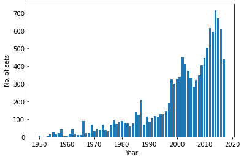
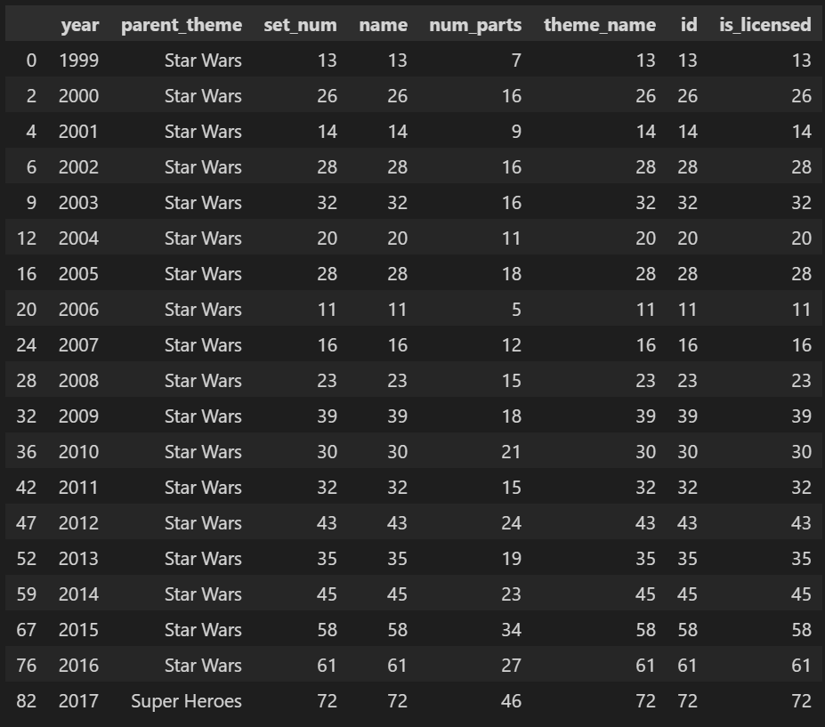

Lego Sets Analysis
Analysis was carried out on yearly set releases by LEGO since 1950 with three questions in mind:
1. How many unique sets were released per year?
- Each unique set has its own set number so the data was filtered according to both year and set number.
- The results show a large increase in sales from 2000, which is likely related to the increased production of sci-fi and animated movies during this time period.

2. Of all licenced sets released, how many were Star Wars themed?
- To answer this, two datasets had to be merged via an inner join based on the column common to both: 'parent_theme'.
- The data was then grouped and counted based on whether the sets were licenced or not, showing that 51% of all licenced sets were Stars Wars themed.
- Clearly, Star Wars dominates the overall market for LEGO sets which is important to consider for marketing.
3. What were the most popular licenced sets of each year?
- Grouping the data by year then filtering by theme allows us to see that every year, Stars Wars sets were the most popular LEGO sets sold except for 2017, when Super Hero sets overtook them.
- This could indicate a shift in interest by the target market so it may be wise to consider shifting manufacturing and advertisements to be more in-line with current trends.

Resources
- Python
- Pandas Library
- Jupyter Notebook